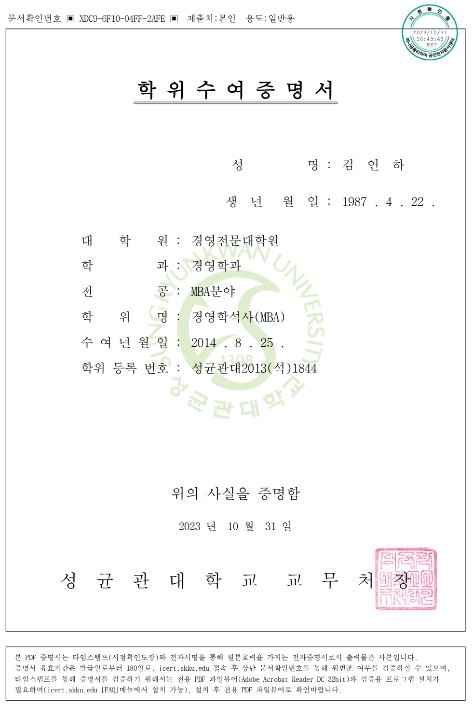
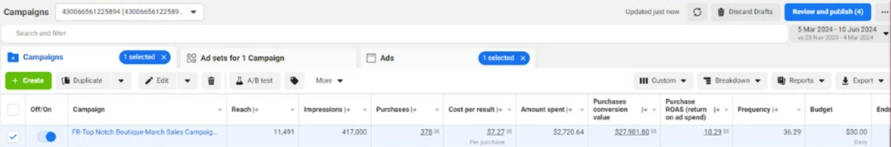
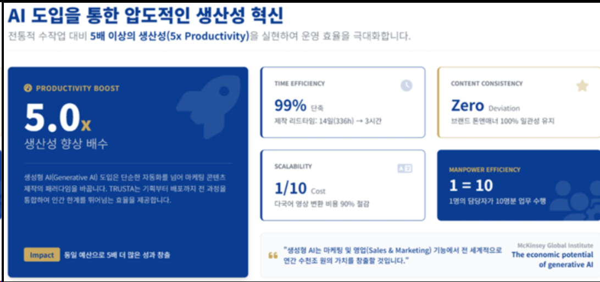

BEFORE · 번역투
“당사는 해외 고객을 대상으로 다양한 마케팅 서비스를 제공합니다.”
누가 무엇을 얻는지 늦게 보이고, 행동이 떠오르지 않습니다.
어느 나라에서 수요가 늘었는지, 우리 업종에 맞는 채널은 무엇인지, 광고 문구가 현지 규정에 걸리지 않는지부터 확인해야 합니다.
번역만 맡기고 광고를 시작하면 표현은 어색해지고, 근거가 다른 숫자가 한 화면에 섞이고, 성과가 나와도 왜 나왔는지 설명하기 어려워집니다. 비용은 이미 나갔는데 다시 만드는 상황이 생기는 이유입니다.
그래서 TRUSTA는 제작보다 먼저 근거·현지어·규정·채널을 맞춥니다.
누가 쓴 문장인지보다 중요한 건, 고객이 믿을 수 있는 근거가 있는지입니다. 출처가 없는 수치는 빼고, 직접 성과와 파트너 사례도 처음부터 구분합니다.
해외 진출의 첫 질문은 “어디에 광고할까?”가 아니라 “누구에게 어떤 이유로 선택받을까?”여야 합니다.
큰 숫자를 보여주는 데서 멈추지 않고, 우리 사업에 실제로 연결되는 조건을 분리합니다.
광고 단가는 오르고, 비슷한 콘텐츠는 늘고, 고객의 선택 기준은 더 까다로워졌습니다. 같은 예산으로 같은 채널만 반복하면 도달 범위는 쉽게 좁아집니다.
그렇다고 준비 없이 해외 광고를 켜는 것도 답은 아닙니다. 잘못된 번역, 확인되지 않은 효능 표현, 국가별로 다른 심의 기준은 광고 중단과 재제작으로 이어질 수 있습니다.
지금 필요한 건 무리한 확장이 아니라, 작게 검증하고 다음 시장으로 넓히는 구조입니다.
문의는 들어왔지만 상담 문구가 준비되지 않았거나, 광고와 랜딩페이지의 약속이 다르면 전환은 쉽게 끊깁니다. 광고 앞과 뒤의 경험까지 하나로 맞춰야 합니다.
늦게 시작하는 비용보다 더 큰 것은, 잘못 시작해 같은 작업을 두 번 하는 비용입니다.
광고비 · 재제작비 · 운영 중단 · 문의 기회 손실
먼저 시장과 검색 수요를 좁히고, 검증된 근거로 메시지를 세운 뒤, 현지 고객이 실제로 쓰는 표현으로 바꿉니다. 그다음 광고 기준을 확인하고 작은 캠페인으로 반응을 봅니다.
반응이 확인된 문장과 소재만 다음 채널로 확장합니다. 블로그 한 편은 검색 콘텐츠로, 짧은 문장은 SNS로, 영상 대본은 광고와 상담 자료로 다시 이어집니다.
시장 선택 → 현지화 → 규정 점검 → 배포 → 성과 회수. 이 다섯 단계를 하나의 운영 흐름으로 만듭니다.
각 단계마다 다음으로 넘어가는 기준을 둡니다. 근거가 확인되지 않으면 제작하지 않고, 현지 표현이 어색하면 게시하지 않고, 반응이 확인되지 않으면 예산을 크게 늘리지 않습니다.
그래서 무엇이 잘됐고 무엇을 고쳐야 하는지 다음 캠페인에서도 설명할 수 있습니다.
수요와 경쟁을 확인합니다.
출처가 있는 주장만 남깁니다.
검색어와 말투를 맞춥니다.
위험 표현을 먼저 찾습니다.
검증된 소재만 넓힙니다.
식품의약품안전처에 따르면 2024년 국내 화장품 생산실적은 17조 5,426억 원, 수출은 102억 달러였습니다. 수출은 전년 대비 20.3% 증가했고 세계 3위를 기록했습니다.
국내 생산액과 해외 시장 전망을 억지로 한 비율로 만들지 않습니다. 지금 확인되는 사실은 K-뷰티 수출이 이미 두 자릿수로 성장하고 있다는 점입니다.
이 숫자는 모든 브랜드의 성장을 뜻하지 않습니다. 다만 해외 고객의 선택지가 넓어지고, 한국 브랜드가 경쟁할 시장이 이미 형성돼 있다는 객관적 출발점이 됩니다.
보건복지부 발표 기준 외국인 환자는 2024년 117만 명, 2025년 201만 명으로 늘었습니다. 환자 수와 소비 범위를 섞지 않고, 확인된 항목만 따로 표시합니다.
‘한 사람당 얼마’보다 먼저 봐야 할 것은 유입 규모와 국가별 진료 수요입니다.
진료과와 국적별 차이를 확인한 뒤 우리 병원에 맞는 고객군을 좁힙니다.
가능합니다. 다만 번역문을 그대로 쓰지 않고, 현지 검색어와 채널 말투를 함께 확인해야 합니다.
업종, 고객 단가, 검색 수요, 광고 규정, 현재 보유 콘텐츠를 비교해 첫 시장을 좁힙니다.
가능하지만 근거와 현지화가 준비되지 않았다면 제작 전 진단부터 권합니다.
아닙니다. 시장과 예산, 제공 자료에 따라 결과는 달라질 수 있습니다.
네. 원장·대표 인터뷰, 실제 제공 과정, 자주 받는 질문부터 근거 콘텐츠로 정리할 수 있습니다.
가능합니다. TRUSTA는 근거와 현지화 기준을 정리하고, 광고 운영 역할은 기존 파트너와 나눌 수 있습니다.
한 국가·한 고객군·한 전환 목표로 시작하면 무엇을 고쳐야 하는지 더 빨리 보입니다.
TRUSTA의 기획자는 경영전문대학원 MBA 과정을 마쳤습니다. 캠페인 한 건의 클릭만 보는 대신, 고객획득비용과 운영비, 전환 이후의 매출 경로까지 연결해 판단합니다.
학위가 결과를 보장하지는 않습니다. 다만 시장을 고르고 예산을 나누고 성과를 다시 투자하는 과정에서, 숫자와 전략을 함께 읽는 기준이 됩니다.
개인정보 보호를 위해 성명·생년월일·문서확인번호·학위등록번호는 화면에서 식별되지 않도록 처리했습니다.
보여드리는 건 이름이 아니라, 어떤 관점으로 사업을 설계하는지에 대한 근거입니다.

시장 분석 · 사업 모델 · 투자 효율 · 성장 전략 관점으로 해외 마케팅을 설계합니다.
국가를 고른 뒤 바로 광고부터 켜지 않습니다. 현지 고객이 무엇을 검색하는지 확인하고, 우리 근거가 그 질문에 답할 수 있는지 살펴봅니다.
그다음 상세페이지와 SNS, 상담 문구를 같은 메시지로 연결합니다. 한 채널에서 확인된 반응은 다음 국가와 채널을 고르는 자료가 됩니다.
처음부터 여러 국가를 동시에 공략하지 않습니다. 문의 가능성이 높은 시장에서 작은 성공 조건을 찾고, 확인된 메시지를 인접 시장으로 옮깁니다.
국가가 달라지면 같은 문장도 다시 검색하고 검수합니다.
보유 근거 정리
국가·고객 선택
검색어·말투 검수
광고·콘텐츠 배포
성과 기반 재투자
기존 홈페이지, 브로슈어, 광고 소재, 병원·제품의 사실자료를 먼저 받습니다. 출처가 확인된 문장과 추가 검토가 필요한 문장을 분리하고, 국가별 표현 위험을 표시합니다.
승인된 핵심 메시지는 상세페이지, 광고, 블로그, SNS에 맞게 길이와 말투를 다시 조정합니다. 발행 뒤에는 문의와 전환 데이터를 모아 다음 기획에 반영합니다.
한 번 만든 근거가 여러 채널에서 다시 일하도록 만드는 방식입니다.
고객은 매 단계에서 무엇이 확인됐고 무엇이 남았는지 볼 수 있습니다. 검토 대기 문장은 승인 전까지 게시용 결과물과 분리합니다.
담당자가 바뀌어도 출처와 승인 기준은 그대로 이어집니다.
사실과 출처를 모읍니다.
검색어와 표현을 맞춥니다.
채널별 형식으로 나눕니다.
제공된 광고관리자 화면에는 리드, 도달, 구매, 광고비, 전환가치, ROAS가 함께 기록돼 있습니다. TRUSTA는 결과 숫자 하나만 떼어 보여주지 않고 캠페인 기간과 예산, 전환 기준을 함께 확인합니다.
이 화면은 TRUSTA가 직접 집행해 만든 성과가 아닙니다. 해외 파트너 네트워크가 운영한 캠페인 자료이며, 협업 가능성과 운영 경험을 설명하기 위한 참고 근거로만 사용합니다.
TRUSTA 직접 수행 성과가 아닌 해외 파트너 운영 데이터 · 업종과 기간, 예산에 따라 결과는 달라질 수 있습니다.

구매 194건, 광고비 738달러, 구매 전환가치 12,675달러처럼 보이는 합계도 기간과 어트리뷰션 설정을 확인하지 않으면 같은 기준으로 비교할 수 없습니다.
그래서 캠페인별 도달, 노출, 구매, 구매당 비용, 전환가치와 ROAS를 한 화면에서 확인합니다. 특정 성과를 TRUSTA의 예상 성과로 바꾸어 말하지 않습니다.
파트너 자료는 해외 광고 운영 역량을 살펴보는 참고 자료이며, 계약 전에는 업종별 데이터 범위와 사용 권한을 다시 확인합니다.
화면에 보이는 캠페인명과 계정 번호는 필요한 범위만 남기고, 고객 식별로 이어질 수 있는 정보는 공개 화면에서 제외합니다.
성과를 인용할 때는 기간, 통화, 전환 기준과 자료 제공 주체를 함께 적습니다.



※ TRUSTA 직접 수행 성과가 아닌 해외 파트너 운영 데이터입니다. 화면의 수치는 재현 또는 보장을 의미하지 않습니다.
뜻만 맞는 문장과 현지 고객이 바로 이해하는 문장은 다릅니다. 제공자 중심의 설명을 줄이고, 고객이 얻는 이득과 다음 행동이 먼저 보이게 바꿉니다.
한국어 검수는 승인된 ko-KR 예시와 저장된 와디즈 문장 자료에서 자연스러운 질문형, 연결형, CTA 표현을 검색해 대조합니다. 단, 다른 프로젝트의 전개와 고유 문구는 가져오지 않습니다.
해외 언어도 같은 방식으로 검색어, 채널 말투, 규정 표현을 분리해 검수합니다. 최종 공개 전에는 해당 언어 검수자의 확인이 필요합니다.
자연스러움만 보고 의미를 바꾸지 않으며, 의료·제품 효능처럼 민감한 표현은 원문의 근거 범위를 넘지 않습니다.
“당사는 해외 고객을 대상으로 다양한 마케팅 서비스를 제공합니다.”
누가 무엇을 얻는지 늦게 보이고, 행동이 떠오르지 않습니다.
“해외 고객이 우리를 찾는 길,
시장 선택부터 함께 만듭니다.”
고객의 목표와 제공 범위를 먼저 보여줍니다.
국가법령정보센터 재결례에는 법적 근거 없는 명칭 광고로 업무정지 2개월 상당 과징금 2,250만 원이 부과된 사례가 있습니다. 또 근거 없는 최상급 표현과 관련해 감경 후 15일 상당 과징금 562만5천 원이 부과된 사례도 확인됩니다.
개별 처분은 위반 내용과 시점, 기관 상황에 따라 달라집니다. 중요한 것은 벌금만이 아닙니다. 이미 쓴 광고비, 재제작비, 운영 중단 동안의 기여이익, 문의 감소까지 함께 계산해야 합니다.
TRUSTA의 사전 점검은 법률 자문을 대신하지 않습니다. 다만 반복되는 위험 표현을 게시 전에 찾고, 근거가 부족한 문장을 안전한 대안으로 바꾸는 데 도움을 줍니다.
예를 들어 ‘최고’, ‘완치’, ‘누구나’, ‘부작용 없음’처럼 입증이 어려운 표현은 그대로 통과시키지 않습니다. 출처가 있어도 광고에 쓸 수 있는 범위인지 다시 확인합니다.
위험 이유와 대체 문장을 기록해 같은 실수를 줄입니다.
첫째, 기관·공시·날짜·원문을 확인합니다. 둘째, Obsidian에 저장된 승인 자료와 충돌하는지 대조합니다. 셋째, Graphify로 주장과 출처, 위험 규칙의 연결을 살펴봅니다.
넷째, 현지 검색과 국가별 광고 기준을 따로 확인합니다. 마지막으로 사람이 고위험 문장과 게시 여부를 결정합니다. 모델 수를 늘리는 것이 아니라 확인 책임을 분리하는 구조입니다.
모든 변경은 검토 기록으로 남기고, 승인된 표현만 다음 제작에 재사용합니다.
원문과 날짜
승인 지식 대조
관계와 충돌
말투와 규정
최종 게시 결정
검증된 원본 하나를 블로그, Instagram, Threads, YouTube, 뉴스레터의 길이와 말투에 맞게 다시 씁니다. 복사하지 않고 채널에 맞춰 재구성합니다.
현재 홈페이지와 광고 문구, 보유 통계, 인증, 소개 자료를 한 번에 점검합니다. 쓸 수 있는 근거와 추가 확인이 필요한 주장, 공개하면 위험한 표현을 구분합니다.
시장 후보 1~2개를 정하고, 고객이 자주 묻는 질문과 검색어를 정리합니다. 이후 상세페이지를 다시 만들지, 광고 메시지부터 시험할지 우선순위를 제안합니다.
금액은 자료량과 대상 국가를 확인한 뒤 견적으로 안내합니다.
결과물에는 사용 가능한 주장, 제외할 주장, 필요한 추가 증거, 첫 테스트 순서가 포함됩니다. 내부 팀이나 기존 대행사에 그대로 전달할 수 있는 형태로 정리합니다.
진단만 받고 직접 실행하는 것도 가능합니다.
선택한 국가와 고객군에 맞춰 긴 상세페이지의 전개, 헤드라인, 증거 위치, CTA를 설계합니다. 직역투를 줄이고 실제 검색과 상담에서 쓰는 표현을 중심으로 문장을 다시 씁니다.
공식 통계는 출처와 기준연도를 표시하고, 사례 수치는 직접 성과인지 파트너 사례인지 구분합니다. Before/After, 시장 그래프, 진행 흐름, FAQ처럼 설명이 필요한 부분은 HTML/CSS/SVG 시각화로 제작할 수 있습니다.
최종 게시 전 법률·현지어 검토가 필요한 문장은 별도 목록으로 전달합니다. 제작 범위와 언어 수에 따라 견적이 달라집니다.
PC와 모바일의 읽는 흐름을 따로 확인하고, 증거 이미지는 잘리지 않도록 비율과 캡션을 고정합니다. 긴 문장은 모바일에서 한 번에 이해되는 호흡으로 다시 나눕니다.
디자인보다 먼저 카피와 근거 위치를 확정한 뒤 시각화를 진행합니다.
상세페이지의 핵심 메시지를 광고와 SNS에 맞게 나눕니다. Instagram은 시각적 이득을 먼저, Threads는 짧은 질문과 관점을, YouTube는 문제와 해결의 흐름을 중심으로 구성합니다.
캠페인은 국가, 고객군, 전환 목표를 한꺼번에 넓히지 않고 작은 단위로 시작합니다. 광고비, 도달, 문의, 예약, 전환 기준을 먼저 정해 무엇을 유지하고 무엇을 멈출지 판단할 수 있게 합니다.
계정 권한과 예산은 고객이 직접 관리하며, 운영 범위는 계약 전 확정합니다. 성과는 보장하지 않습니다.
문의가 들어온 뒤 사용할 상담 문구와 응답 기준도 함께 맞춥니다. 광고에서 약속한 내용과 상담 현장의 설명이 달라지지 않도록 연결합니다.
주간 단위로 소재와 고객 반응을 확인하고, 다음 테스트에 남길 가설을 기록합니다.
광고비를 늘리는 결정은 전환 기준이 확인된 뒤에 합니다.
콘텐츠를 만들 때마다 같은 위험을 처음부터 찾지 않도록, 제품·병원·브랜드별 사실자료와 승인 표현을 정리합니다. 출처가 바뀌거나 규정이 업데이트되면 검토 대상 문장을 다시 표시합니다.
자동 점검은 문장 속 최상급, 보장, 효능 단정, 비교 표현, 출처 없는 숫자를 찾아냅니다. 이후 사람이 맥락과 실제 근거를 확인하고 대체 문구를 승인합니다.
검토 결과와 변경 이력은 로그로 남겨 다음 캠페인과 채널에서 같은 기준을 재사용합니다. 법률 자문이 필요한 사안은 별도 전문가 확인 대상으로 분리합니다.
월 운영 범위는 콘텐츠 수와 국가 수를 기준으로 협의합니다.
새 통계나 규정이 들어오면 기존 콘텐츠에 영향을 받는 문장을 찾아 재검토합니다. 단순히 새 글을 만드는 서비스가 아니라, 이미 게시된 표현을 지속적으로 관리하는 운영에 가깝습니다.
승인되지 않은 결과는 학습 자료나 다음 콘텐츠에 자동으로 재사용하지 않습니다.
현재 자료, 목표 국가, 주력 서비스, 광고 이력을 확인한 뒤 한 장의 실행 지도로 정리합니다.
시장 우선순위, 사용 가능한 증거, 고쳐야 할 문장, 첫 테스트 채널, 필요한 추가 자료를 순서대로 제안합니다. 이후 제작이나 운영이 필요할 때 다음 단계로 이어갑니다.
상담 후 범위와 일정, 견적을 먼저 확인하고 결정할 수 있습니다.
진단 결과는 실행 여부와 관계없이 고객이 보관할 수 있는 문서로 제공합니다.
예쁜 페이지 한 장으로 끝내지 않으려 합니다. 어떤 시장을 고를지, 고객이 무엇을 믿을지, 어떤 문장이 광고 심사와 현지 문화에서 문제가 될지, 문의 이후 상담은 어떻게 이어질지까지 함께 봅니다.
MBA 기반의 사업 분석, 공식 자료 중심의 근거 설계, Graphify를 활용한 지식 관계 점검, 현지어 검색과 사람 승인을 하나의 과정으로 묶었습니다.
광고 파트너의 운영 데이터는 직접 성과와 구분하고, 고객 사례가 충분하지 않은 영역은 사례처럼 꾸미지 않습니다. 확인되지 않은 숫자보다 오래 쓸 수 있는 기준을 남기는 것이 TRUSTA가 선택한 방식입니다.
해외 진출은 한 번의 캠페인이 아니라 반복해서 배우는 운영 체계이기 때문입니다.
고객이 직접 확인할 수 있는 출처, 사람이 마지막에 승인하는 절차, 다음 담당자도 이해할 수 있는 기록을 남깁니다. 빠른 제작보다 설명 가능한 성장을 택합니다.
그 기준이 쌓이면 국가와 채널이 늘어나도 브랜드의 말과 근거는 흔들리지 않습니다.
이름과 개인 식별 정보는 전면에 내세우지 않고, 검증 가능한 경력과 작업 방식만 보여드립니다.
해외 마케팅 현장에서는 번역, 디자인, 광고, 법률 검토가 서로 다른 곳에서 진행되는 경우가 많습니다. 각 담당자는 자기 업무를 끝냈지만 전체 메시지는 달라지고, 출처와 수정 이유는 남지 않습니다.
나중에 문제가 생기면 어떤 숫자를 누가 넣었는지, 어느 나라 기준으로 검토했는지 다시 찾느라 시간이 듭니다. 반대로 성과가 나와도 어떤 문장과 채널이 작동했는지 다음 캠페인에 제대로 이어지지 않습니다.
TRUSTA는 이 단절을 줄이기 위해 시작됐습니다. 사실자료, 현지어, 규정, 콘텐츠, 광고 결과를 한 흐름에서 연결하고, 사람의 최종 판단을 반드시 남기는 방식입니다.
빠르게 만드는 것보다, 다음에도 설명할 수 있게 만드는 것을 우선합니다.
자동화는 반복 확인을 줄이는 도구로 사용하고, 어떤 주장을 공개할지 결정하는 책임은 사람에게 남겨둡니다.
그래서 서비스의 중심은 AI가 아니라 검증 기준과 운영 과정입니다.
네. 완벽한 자료를 기다리기보다, 지금 있는 홈페이지와 소개서, 광고 소재에서 확인 가능한 근거부터 찾으면 됩니다.
쓸 수 있는 것은 살리고, 부족한 것은 ‘확인 필요’로 분리하고, 위험한 표현은 게시 전에 바꿉니다. 그다음 한 국가와 한 고객군으로 작은 테스트를 시작합니다.
시작은 작게, 기록은 분명하게, 확장은 성과가 확인된 뒤에.
첫 상담에서는 잘 만든 자료보다 실제로 가지고 있는 자료가 더 중요합니다. 부족한 부분을 숨기지 않아야 필요한 순서를 정확히 정할 수 있습니다.
승인된 핵심 문장, 사용한 출처, 현지어 선택 이유, 광고 위험 표현, 채널별 길이 기준을 함께 정리합니다.
다음 콘텐츠를 만들 때 처음부터 다시 설명하지 않아도 되고, 담당자가 바뀌어도 같은 기준으로 검토할 수 있습니다. 캠페인 결과는 다음 기획의 우선순위에 반영합니다.
성과가 좋았던 문장도 국가와 채널이 달라지면 다시 검색하고, 오래된 출처는 최신 자료로 교체합니다.
운영 기준은 전달 후에도 고객이 직접 확인할 수 있게 정리합니다.
출처, 검토 상태, 수정 전후 문장, 승인자를 기록합니다. 게시 후 문제가 생겼을 때도 근거와 변경 이력을 다시 확인할 수 있습니다.
기준일과 단위를 함께 보관합니다.
확인이 끝나지 않은 문장은 게시용 결과와 분리하고, 사람 승인이 완료된 뒤에만 다음 단계로 이동합니다.
어떤 국가와 채널에서 어떤 문장이 문의로 이어졌는지 확인합니다. 성과가 좋았던 근거와 표현은 다음 콘텐츠에 반영하고, 반응이 없던 소재는 이유를 기록합니다.
새로운 콘텐츠를 무작정 늘리는 대신, 이미 확인된 메시지를 더 정확한 고객과 채널로 넓혀갑니다.
도달과 클릭만 보지 않고 문의의 질, 상담 진행, 예약 또는 구매까지 연결되는 흐름을 확인합니다.
성과가 약하면 시장, 메시지, 채널, 상담 과정 중 어디에서 끊겼는지 차례로 살펴봅니다.
시장 상황, 업종, 가격, 브랜드 인지도, 보유 근거, 예산, 현지 규정에 따라 결과는 달라질 수 있습니다. 공식 시장 통계와 파트너 사례는 가능성을 이해하기 위한 자료이지 개별 성과를 보장하는 자료가 아닙니다.
의료·뷰티 광고는 국가와 채널에 따라 추가 심의나 전문가 검토가 필요할 수 있습니다. TRUSTA의 자동 점검과 콘텐츠 검수는 법률 자문을 대신하지 않습니다.
게시 전 최종 사실 확인과 승인 책임은 고객과 지정 검토자에게 있습니다.
파트너 제공 자료와 내부 목표 자료는 직접 수행 성과와 같은 위치에서 비교하지 않으며, 화면마다 자료의 성격을 표시합니다.
현재 홈페이지 주소, 주력 서비스 또는 제품, 목표 국가, 기존 광고 자료, 사용할 수 있는 인증·통계·성과 자료를 준비해 주세요.
자료가 부족해도 괜찮습니다. 확인된 정보와 추가 확인 항목을 나누고, 첫 단계에 필요한 범위부터 견적을 안내합니다.
광고 기간과 예산, 문의 수, 실제 상담 결과도 준비해 주세요. 자료의 기준이 분명할수록 첫 테스트를 정확하게 설계할 수 있습니다.
긴 글은 검색 콘텐츠로, 핵심 문장은 SNS로, 설명 장면은 영상과 상담 자료로 바꿉니다. 채널은 달라도 근거와 핵심 메시지는 흔들리지 않게 관리합니다.
채널마다 같은 문장을 복사하지 않습니다. 읽는 속도와 행동 방식에 맞춰 길이, 첫 문장, CTA를 다시 설계합니다.
출처와 기준이 분명하고, 지금 제공하는 서비스와 직접 연결되는 자료가 중요합니다.
스크린샷은 기간과 계정 범위, 직접 성과와 파트너 성과를 표시해 주세요. 학위와 인증은 개인정보를 가리고 필요한 사실만 보여드립니다.
수치가 보이는 자료는 통화, 기간, 집계 방식, 전환 기준을 함께 확인합니다. 일부 화면만 잘라 의미가 달라지지 않도록 원본 범위를 기록합니다.
네. 전면 교체가 아니라 필요한 섹션과 문구부터 단계적으로 바꿀 수 있습니다.
권한 범위는 계약 전에 협의하며, 고객이 소유권과 결제 권한을 유지하는 방식을 우선합니다.
가능하지만 첫 단계에서는 우선순위 국가를 좁혀 메시지와 전환 경로를 검증하는 편을 권합니다.
현지 검색 결과와 승인된 말투 자료를 대조하고, 고위험 문장은 사람 검수 대상으로 분리합니다.
범위에 따라 조사하며, 사용한 출처와 기준연도를 함께 전달합니다.
고객이 지정한 최종 승인자가 사실과 공개 범위를 확인합니다. 고위험 문장은 별도 검토 상태로 남깁니다.
네. 저장된 승인 한국어와 와디즈 문장 자료를 검색해 자연스러운 질문, 연결, CTA 표현을 대조합니다. 고유 문구는 복사하지 않습니다.
아닙니다. 결과는 시장, 예산, 상품 경쟁력, 상담 운영 등 여러 조건에 따라 달라집니다.
직접 성과처럼 사용할 수 없습니다. 파트너 운영 데이터라는 점과 자료 범위를 함께 밝혀야 합니다.
자동 점검은 위험 신호를 찾는 단계입니다. 국가와 사안에 따라 현지 법률 전문가나 심의기관 확인이 필요합니다.
상담 후 작업 범위, 필요한 자료, 일정, 견적, 사람 승인 지점을 정리해 안내합니다.
표시된 통계와 사례는 기준일 이후 변경될 수 있으므로 게시 직전 원문을 다시 확인합니다.
직접 성과, 파트너 성과, 자격 근거, 내부 목표를 서로 다른 라벨로 구분합니다. 개인정보와 계정 식별 정보는 공개 화면에서 가립니다.
TRUSTA가 시장 선택부터 현지화, 검수, 배포까지 함께 설계합니다.

제공된 사업계획 자료를 디자인 참고로 배치했습니다. 실제 생산성은 업무 범위, 입력 자료, 승인 속도와 운영 방식에 따라 달라질 수 있습니다.
외부 공개 전에는 산정식, 비교 기준, 표본과 출처를 별도로 검증해야 합니다.